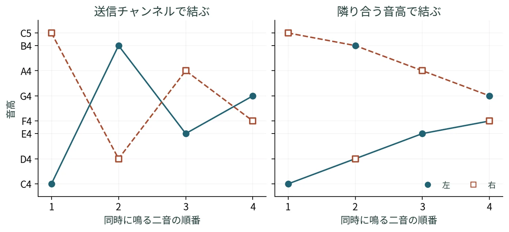

第47章 同じ空気から二つの旋律を取り出す
一本の楽器や一本のマイクの録音から、耳はどうやって複数の旋律を取り出すか。
この章で学ぶこと
- 聴覚情景分析の考え方を知る
- 音域の近さで声部をつなぎ直す計算をする
- 音階錯聴やストリーミングのデモを聴いて記録する
一本のチェロに何人の奏者が聞こえるか
バッハ《無伴奏チェロ組曲第1番》前奏曲の冒頭を、まず Lucia Swarts（ルシア・スワルツ）の演奏で聴く。次の一巡では小節頭の低音だけを鼻歌で引き伸ばし、その次には高いところの音を追う。指と弓は一連の分散和音を奏でている。しかし耳は時間的に離れた低音を結び、上声の変化とは別に追跡できる。ここで「何声か」と問うには、実際の楽器の数、楽譜が示唆する構造、今耳に浮かんだ音の流れの数を分けて記録する必要がある。
マイク一本が記録した波形を とする。二つの音源の波形を として と仮定しても、どちらか一方の波形は決まらない。任意の波形 について だからである。実際の音源を選び出すには、物理的に持続しうる振動か、同じ方向から来るか、同時に立ち上がるか、音高や音色が滑らかに続くか、といった追加の手掛かりが要る。聴覚情景分析とは、こうした手掛かりで音をまとまりに組織する過程を研究する領域である。
配線と旋律が食い違う小品
同じ拍で二音ずつ鳴らす四拍の習作を作る。中央のドをC4として、左スピーカーには C4・B4・E4・G4、右には C5・D4・A4・F4 を送る。各拍の同時音を音域の近さでつなぎ直すと、下に C4・D4・E4・F4、上に C5・B4・A4・G4 が現れる。二つの譜面を行き来している各奏者が、自分の奏でた跳躍と別の旋律を合奏から聞くことがありうる。下図の丸と四角は両面で同じ8音である。

例・計算
計算。 音高を半音単位の MIDI 番号に直し、連続する音 を結ぶ費用を と定める。同じ時刻の音同士は結ばず、各音から次の時刻の一音に一対一に結ぶ。左チャンネルは 、費用は 。右は で 。これに対し下声は 、上声は 。配線に忠実な二声の合計42に対し、音域で分ける二声の合計は10となる。この差は分析者が選んだ距離による予測である。実際の聴取報告の数値を計算したわけではない。
補題。 二時点で音高がそれぞれ 、 なら、低音どうし・高音どうしを結ぶ費用は、交差させた費用以下である。
証明を読む（読まなくても先へ進めます）
と置く。 では 、 では 、 では であり、全区間で非減少である。 の各項を移すと 。各隣接時刻で使えば、本例の対応は合計費用を最小にする。等号になる配置もあり、一般には最小解の一意性まで保証しない。
距離だけを信じる耳が聴き逃すもの
同じ線をそのままに、左をヴァイオリン、右を息音の目立つフルートにするとどうか。音高が跳んでも、同じ音色の系統として追えることがある。あるいは二人が本当に声部交差をする場面では、近い音から近い音への接続は奏者の意図と食い違う。作曲家は、各声部が交差する瞬間にも音色、アーティキュレーション、持続、拍節上の位置のどれを残すか選べる。対位法の声部進行を習う際、音域の近さが奏者の同一性を必ず保存すると仮定してはならない。
聴いてみよう
聴取実験。 まず Deutsch（ドイチュ）の音階錯聴を、左右が分離したステレオのヘッドホンで、強くない音量で聴く。高い列・低い列のどちらがどちらの耳に来るか、あるいは定位できないかを紙に書く。左右を逆にしてやり直したあと、片チャンネルずつ聴く。両耳で聞こえた輪郭が片方のチャンネルにそのまま存在するか、図と突き合わせる。報告には個人差がある。機器のモノラル化が有効だと左右入替え試行は成立しないので、実験前に左右を単独で確認する。
次に Bregman（ブレグマン）らのデモにある、短い高音A、低音B、高音A、休符を反復する型を聴く。四つの位置の長さを同じにすれば、全体を一列として聞くと三打と空白、音域別に追うとAは二枠ごと、Bは四枠ごとの等間隔である。同じ時間配列に異なる拍の感触が潜む。最初の2秒としばらく後とで感じ方が変わったら、切り替わった秒を記録する。高さの差を変えた試行の間に休止を入れ、提示順も変えると、聴き始めと蓄積の影響を切り分けやすい。
やってみよう
問いと解答。 上の四拍の習作で、チャンネル変更一回に 半音相当の費用を加えるとする。配線を追う候補と、低域・高域に分ける候補はいつ同点か。後者は各声部が3回ずつ左右を渡り、総費用は 。前者は42のままであるから 。これは二候補の比較である。全組合せを許すと、隣接時刻ごとの部分的な切替えが有利な場合もある。人の耳に固有の定数を測るには、試行と観測が別途必要になる。
この結果を譜面に返してみよう。四拍の後でもう一度冒頭へ戻ると、今度は第4拍から第1拍への継ぎ目も耳の対象になる。そこで終拍だけ二音を長く引き、二巡目は短い休符を差し挟む。四拍の中の費用は変化しない一方、休止を挟んで前の音を同じ声部に引き継ぐかどうかが新しい判断になる。計算の単位を「小節」と先に決めた瞬間、その外の接続は計算から消えていたことがわかる。
ここだけ押さえる
- 足し合わされた波形だけからは、元の二つの音源は決まらない。
- 耳は、音域の近さ・音色・定位などの手がかりで音を流れにまとめる。
- 配線上の声部と、聞こえる旋律は一致しないことがある。
この章の資料
- 検査音、左右別の譜面、被験者が報告した複数の聞こえ方を著者の解説で照合する。UC San Diego・Deutsch の音階錯聴
- 周波数差や反復が音の分離に及ぼす効果を音源で試し、冊子の各実験の条件を読む。Bregman・Ahad のデモ音源／デモ解説冊子 PDF
- 「Prelude」を選ぶ。反復音型が保たれたまま低音の働きが変わる箇所を聴き、弓の動きとも比較する。Netherlands Bach Society・BWV 1007